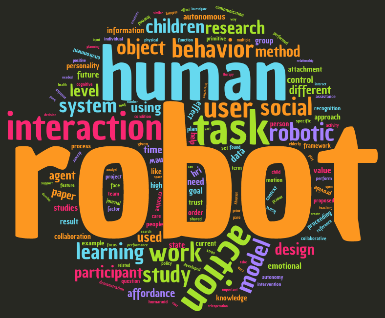

In just a few hours, I’ll be taking off for Christchurch, New Zealand, where I’ll be attending the 2016 International Conference on Human-Robot Interaction (HRI). I’m especially excited for this year’s conference, for several reasons.
Reason 1: The Presentations
As an HRI researcher, I’m obviously excited about the program this year. I’m particularly excited for the sessions on “Morality and Trust in HRI”, “Human-Robot Collaboration”, and of course, “Tools & Techniques for Social Robots”, in which I’m presenting a paper on human-robot natural-language communication. HRI is a single track conference, which means that everyone attends the same talks. This means I get to share my current research with the entire HRI community at once, which is both exciting and anxiety-inducing (but mostly exciting).
Reason 2: Overseeing HRI Pioneers
Last year, I was lucky enough to be selected for the HRI Pioneers Workshop; a student-run workshop which is the “premiere forum for graduate students in HRI”. After the workshop last year, Hee-Tae Jung (from UMass Amherst) and I were elected Program Committee Co-Chairs for this year’s workshop, which means we were in charge of finding paper reviewers, assigning reviewers to papers, lightly prodding reviewers to give us their reviews, and deciding which papers would be accepted to the workshop. This was a lot of fun, and a lot of work. This year, I’m excited to pop into the workshop and learn more about the students whose abstracts we accepted. Here’s a word cloud of the most common (interesting) words found in the submissions of this years’ attendees.

Reason 3: Lab Trip!
In the past, there have usually been only one or two other people from my lab at the conferences I’ve attended. This time, there will be five of us! Three of my labmates have papers in workshops at HRI (including Pioneers!), and of course my advisor is attending. Three of us are going to have a 10-hour layover in Sydney, Australia, so I’m looking forward (I think) to several hours of jetlagged exploration of Sydney.
Reason 4: Pushing the Envelope
This year’s program includes a new session, “Alt.HRI” which solicited papers that push boundaries and take risks. I’m interested to see just how risk-taking the papers in this new session are. On a similar note, our lab has a paper entitled “Are We Ready for Sex Robots?” in a non-Alt.HRI session which is both risky and risqué. While I implemented the study behind the paper (a survey; no sex robots in our lab!), I haven’t actually seen the results, which my advisor has been playing close to the chest… so I’m excited to hear what they are! In preparation, I’ve been reading David Levy’s “Love and Sex with Robots”, which I highly reccomend.
Reason 5: It’s New Zealand
It’s New Zealand! Enough said.